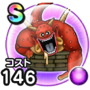

いどまじん
ほこらこころ最大コスト+4イオ属性ダメージ+8%バギ属性ダメージ+6%物質系へのダメージ+5%怯え耐性+7%【大魔道士】じゅもんダメージ+6%【魔剣士】スキルの斬撃・体技ダメージ+6% / 8.0点
くわしい特徴
【ランク特殊効果】 こころ最大コスト+4イオ属性ダメージ+8%バギ属性ダメージ+6%物質系へのダメージ+5%怯え耐性+7%【大魔道士】じゅもんダメージ+6%【魔剣士】スキルの斬撃・体技ダメージ+6%

ほこらこころ最大コスト+4イオ属性ダメージ+8%バギ属性ダメージ+6%物質系へのダメージ+5%怯え耐性+7%【大魔道士】じゅもんダメージ+6%【魔剣士】スキルの斬撃・体技ダメージ+6% / 8.0点
【ランク特殊効果】 こころ最大コスト+4イオ属性ダメージ+8%バギ属性ダメージ+6%物質系へのダメージ+5%怯え耐性+7%【大魔道士】じゅもんダメージ+6%【魔剣士】スキルの斬撃・体技ダメージ+6%